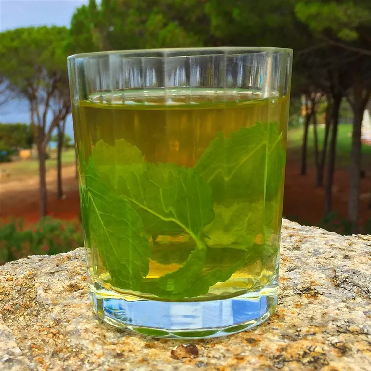

Green tea recipe

Description
Green tea is made from the leaves and buds of the Camellia
sinensis plant. Originating in China, it is produced by
steaming or pan-frying the leaves to prevent oxidation,
which distinguishes it from black or oolong tea.
The processing methods and growing conditions vary widely,
creating numerous types of green tea with distinct
flavors and aromas.
INGREDIENTS
-
water
-
honey
- Lemon juice
- Green tea leaves
Directions
- Put lemon zest into a large cup or mug.
Cover with 2 teaspoons boiling water and
let steep for about 3 minutes.
Stir in the green tea powder and hot water.
Add lemon juice and honey. Mix well and serve.
Home